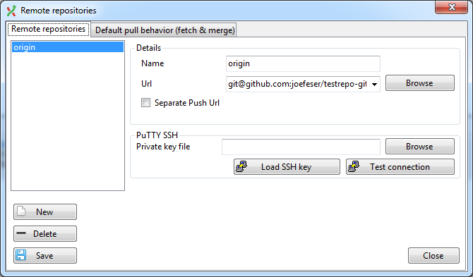
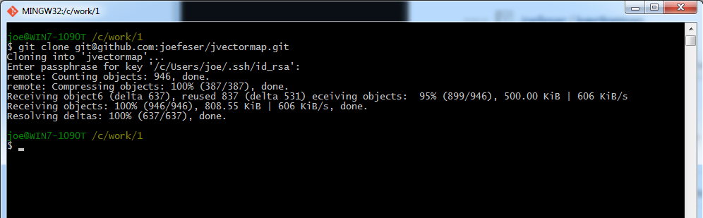
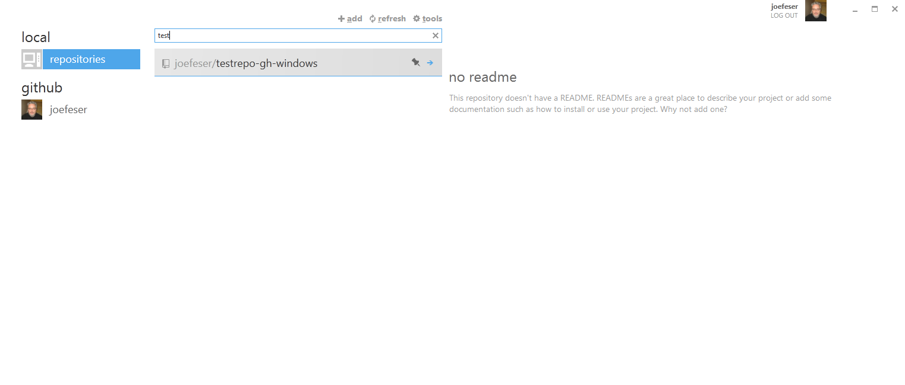
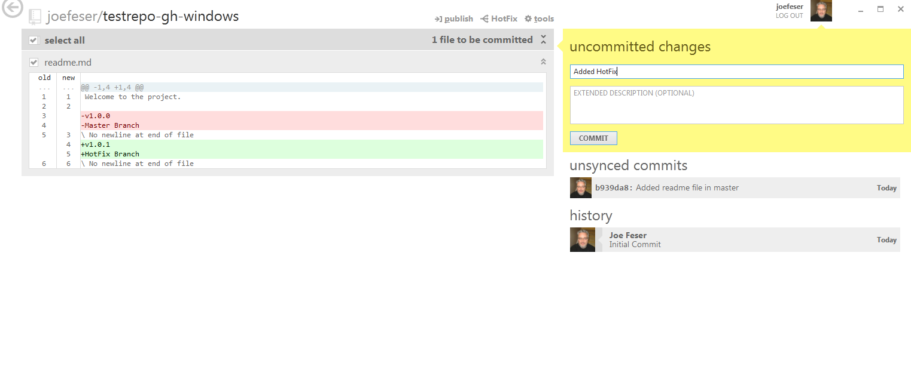
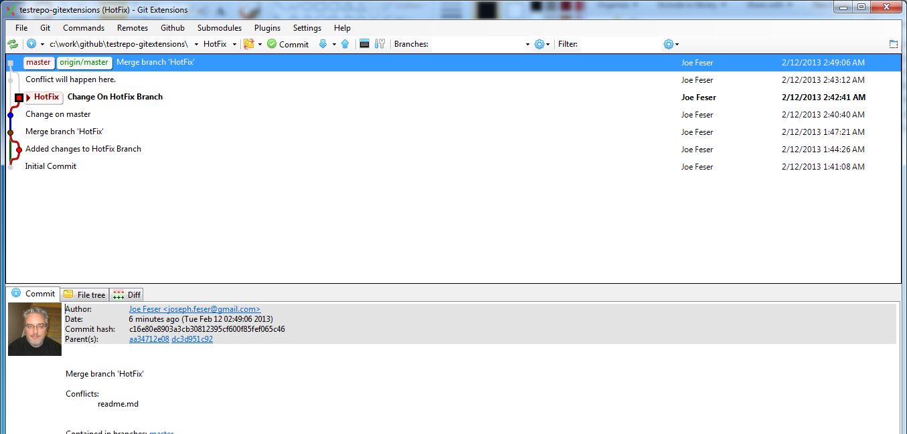
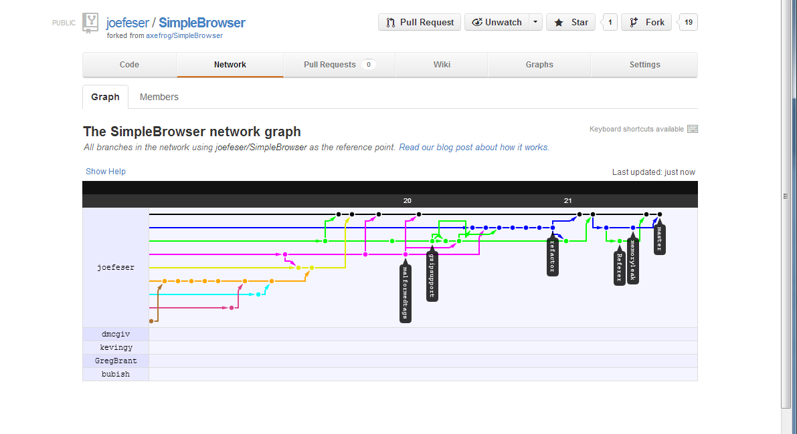
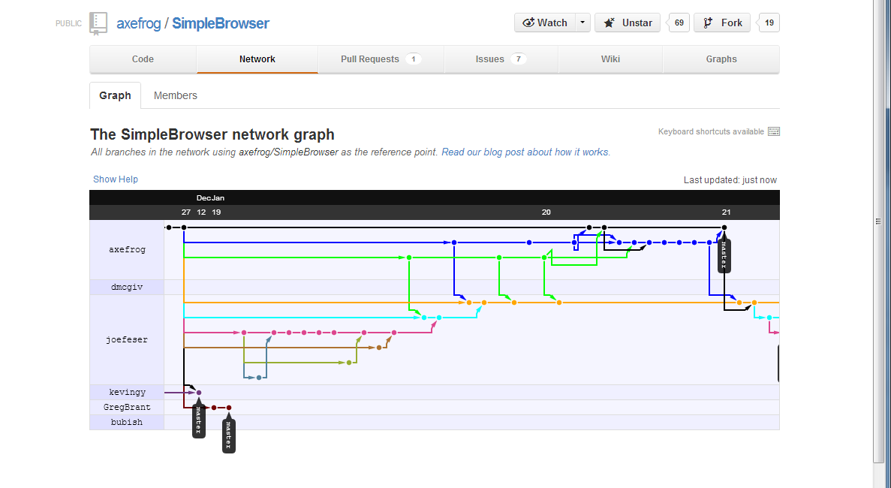

Git - What is it
Git is a free and open source distributed version control system designed to handle everything from small to very large projects with speed and efficiency.
Git is easy to learn and has a tiny footprint with lightning fast performance. It outclasses SCM tools like Subversion, CVS, Perforce, and ClearCase with features like cheap local branching, convenient staging areas, and multiple workflows.
Why is it better
-
Better branching
-
Better merging
-
Changes can be made offline
-
Open Source
-
Huge Developer community
-
Better Workflows (any)
-
Lightning fast and small
Comparisons
-
Git works the same as Bazaar and Hg (Mercurial)
-
It does not work the same as SVN or TFS (online models)
Local Vs Remote
-
When you pull your code down, you have a copy of the entire repo from the server.
-
That means every check-in, every diff
-
When you check-in, you are making a commit to your local repository (local)
-
You must "push" your code to an "origin"
What is a fork
-
It is a clone of the entire repository but at the time that you request it.
-
The source repository is referenced on your fork page so you are able to locate the master.
-
Helpful to see variations of the project.
Git Setup
Download Git
http://git-scm.com/downloads
Download Git Extensions
http://code.google.com/p/gitextensions/
Install Git First
then
Install Git Extensions and disable msysgit
Configure Git Extensions
This is the easiest way to get started
You can perform these steps from the command line
Load Git Extensions
Choose the British Flag for English
Setup
Setup
Setup
Putty - SSH for GitExtensions
First we must generate an ssh key
Putty
Click on the Generate button.
Putty
Move the mouse around to create random data.
Putty
Save the public and private key. Make sure a keyphase is set.
Putty
Place the files in c:\users\[your name]\.ssh
Add Key to GitHub
Click on Account Settings
Add key to Github
Under ssh keys, you will see your existing list.
Add Key to github
You will see you can't just copy your public key in, you need to add ssh-rsa to the front. Also it must be the public, not the ppk file.
Push changes to github
You may need to click Load SSH key, choose the PPK file and enter the passphrase. Your changes will now upload.
Git Extensions
Main UI. Click Create New Repository
Initialize New Repo
Choose the destination folder and Click Initialize.
It will create the folder it if it is missing.
Add .gitignore
Click on Add Default ignores and it will create a good starting set. Click Save
Commit the File
Click on the Commit button in the toolbar. Choose the Stage All button
Commit the file
Notice the file has been moved. Click on the commit button (not shown) in lower left corner.
Create an Empty Repo
Go to github.com to your profile and click on the icon next to your name.
Create New Repository
Provide a Repository name and a description. Click Create Repository
Empty Repository View
You will be provided with step by step directions for the command line tools. Copy the ssh path.
Configure Remote Repositories
In order to push code, you will need the ssh path
CONFIGURE REMOTE REPOSITORIES

Set the name to origin and copy the ssh path from the repository screen on github into the url. Optionally browse to your ssh key now so it will be saved with the repo.
Pull Repo Before Pushing
You will want to pull the repo down first just to make sure you do not have conflicts before you push.
Push your code to Github
Now you will be able to push your code. You will see origin is selected and master is the branch name.
Confirmation
You will be told this is a new branch
You will also need to set a tracking reference locally to make changes.
Creating a new branch
You may also run git branch hotfix then git checkout hotfix
Creating a new Branch
Set the name and click the Create Branch button.
Display of Branches
Both the master and Hotfix branch are current.
Make a change and Commit
We made a change to the readme.md file, changing the text to v1.0.1 and also changed the Name.
Change Back to Master
Once you make the change, you can switch back to master so we can merge that changes.
HotFix is "ahead" of master
Merge Changes into master branch
Choose the Hotfix branch, right click and choose Merge into current branch. The HotFix tag shows you will be merged. You may also be presented to origin branches if they exist.
Merge Branches
Choose Always create a new merge conflict, otherwise your changes will be "fast forwarded" into the master branch like they always existed there. If you are doing short lived local branches you may want to fast forward.
Merge Results
You can see the changes were merged and the lines come together to the same point.
Push changes to origin
Once the changes are pushed you will see the tracking branches are labeled showing that master is up to date on the server.
Cloning an existing repository
You must configure github first. By choosing this, you will authenticate, allowing you to pull a list of repositories.
Cloning an Existing repository
Choose fork / clone repository under Github.
Cloning an existing repository
Sometimes it is just easier on the command line

GIthub for windows
Github for windows
Github for window
Once it is installed, the application will search for existing repositories on your machine.
Filtering your repositories
By typing in the box, the list will narrow down to items that start with the search term. Notice it also shows the history.
Existing Repository
Once you choose a repository, the last commit is chosen and the files checked in are listed on the left.
Display Diffs
By clicking on the double arrow on the right of the file name, you will expand the diff.
Branches and Merging
By clicking the branch icon, you can switch branches or merge by clicking on the manage button.
Merging
You drag and drop the branches on the squares at the bottom.
Branch visualization
There is none. I had to dump to the shell
Checking in files
Once you make a change, the uncommitted changes will turn yellow, allowing you to commit the changes.
Pushing changes to origin
All you need to do is click sync.
Creating a new repository
Click on the add button.
Creating a new repository
View on Github
Activate the new repository

For some reason, it did not auto select it. It may have been because I had a filter.
Add the gitignore file
Github for Windows will ask if you would like the gitignore and gitattributes file added. Create a commit message and commit.
Push changes to github

It appears that until you push once on a new repository created on the client, sync becomes publish. It does the same thing.
Verify on github
If you went to Github, you would see your changes.
Make changes to Readme.md
This is the master readme file that is displayed on the home page of the repository.
Create a new Branch
Click on the icon next to master. Type Hotfix in the box under branches.
MAke changes to readme.md

In the Hotfix branch, you update the readme.md file to state the new version and check it in.
Merge changes into master
Hotfix into master. Click Merge.
File History
Choose any file for any commit.
File History
Right click and choose File History
View Code
You can view the code for that check-in or any check-in for that file.
Blame
Find out exactly who changed what line when.
Blame
As you mouse over, it will display the check-in information.
Merge Conflicts
One day you will see this. Luckily this is not SVN or the old TFS
Merge Conflicts
You can choose no, and your merge will end. You will not loose a thing.
Merge conflicts
Every file that is conflicted will display in the list. You can manually change it or use the tools.
Start Mergetool
I don't always get this but when you click Start Mergetool, sometimes this command line application comes up. Hit return.
REsolving
Beyond Compare 3 Professional is the best tool for merging.
REsolving
I manually took the version line from local (branch we are merging too) and the description from remote (branch we are merging from)
Resolving
You can still back out
Cleaning up
Depending on your options, an orig file is created. I ignore it
.Gitignore
By adding *.orig to the ignore file, you will never see the new files again. They are ignored.
Commit the merge
In the comment window you would see that it was a merge. Notice that I kept v1.0.4 from master and appended HotFix Branch
Syncing Branches

If you work in branches, you want to pull master back into your branch.
Merge from Master
Merge changes back from master.
Everything is synced
All of the code from master is now in Hotfix
Cherry Pick
Lets say you would like the Cherry Pick check-in in the master branch but not Second Change.
Cherry Pick
Notice the difference in the second check-in.
Change to master
The first thing you do is change to master.
Choose what to cherry pick
Right click on the check-in and choose cherry pick.
Cherry Pick
You will then be provided with the verify screen.
Change is applied
You now have a copy of the commit. Notice the hash is different
Original hash
The hash is different since the parents are different.
Verify correct result
Notice the second change is not in the resulting file.
Push Multiple branches
When pushing, choose push multiple branches. Only current will be sent otherwise.
Verify branches are pushed
Notice the origins are both updated.
Contributing
When you pull for the first time, you should end up on master but you see all of this other grey stuff above it.
Checkout Branch
Verify create local branch

You need to verify that you would like a new local branch.
Code is downloaded and branch created
Adding remotes
You may add any remote (fork or not) just be obtaining the read-only url.
Adding Remotes

Choose manage remotes on the remotes menu option. This can also be done from the command line using git remote add
Update all remote branch info
You actually are running a git fetch on every remote.
REmote Results
You can see that develop is farther than master.
Network Graph
This is where I start to determine which remotes to import
More Remotes added
Network Graph - Your View
network graph - origin view
Network Graph - My Fork

Since I have everything from the master, the repo does not display
Network Graph - Origin

Network graph - origin
Typical release merge cycle
Merge into multiple branches
Pull Requests
You can even use pull requests from a branch of your own repository.
Pull REquests
Pull requests
Pull requests
Some may not auto merge
Adding more check-ins
You have to be careful because if you add more check-ins to the branch, they are included in the pull request.
Adding more Check-ins
Help with merging
Pull request managed locally
Push changes to github and issue closes
Final View
Branch per feature
Git allows you to easily support this model.
Using with TFS
-
git-tfs is open source
-
git-tf is written by Microsoft
-
git-tfs works with hosted tfs
-
git-tf does not
Using with SVN
-
git-svn works great but can crash on large check-ins
-
I back-up my .git folder if I have a large number of check-ins.
How this was made
rvl.io
reveal.js